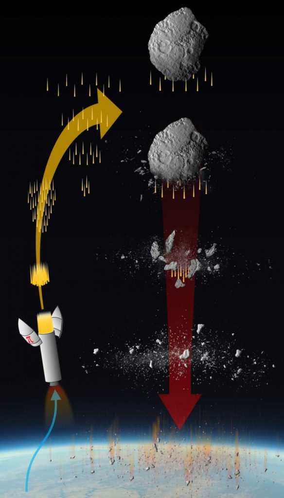

ဒီ နက္ခတ် ပညာရှင်တွေ လုံးဝ မသိလိုက်တဲ့ ကိစ္စ တစ်ခုကတော့ အခြား ဥက္ကာ တုံးကြီး တစ်ခုဟာ ကမ္ဘာ့ လေထုထဲကို ဝင်ရောက်လာခဲ့ တာပဲ ဖြစ်ပါတယ်။ ဖေဖော်ဝါရီ ၁၅ ရက် ၂၀၁၃ ရက်နေ့မှာ အချင်း ၆၂ ပေခန့်ရှိတဲ့ ဥက္ကာတုံးကြီး တစ်ခုဟာ ကမ္ဘာ့ လေထုထဲ ဝင်ရောက်လာပြီး ရုရှားနိုင်ငံ ချယ်လယာဘင့်စ် (Chelyabinsk) မြို့ပေါ်မှာ ပေါက်ကွဲ ထွက်သွားပါတယ်။ ဒီပေါက်ကွဲ မှုကြောင့် မြို့တွင်းက အဆောက်အဦ တွေရဲ့ မှန်ပြတင်းတွေ ကွဲထွက်ကုန်ပြီး အဆောက် အဦ တချို့လဲ ထိခိုက် ပျက်စီး ခဲ့ရပါတယ်။ လူ ၂,၀၀၀ လောက် ထိခိုက် ဒါဏ်ရာ ရခဲ့ပေမယ့် လူ အသေအပျောက်တော့ မရှိခဲ့ ပါဘူး။
“နောက်မှ သိရတာက အဲ့သည်နေ့က ဥက္ကာပျံ နှစ်ခု ကမ္ဘာနားကို ကပ်လာ ခဲ့တာပါ။ တစ်လုံးက လာမယ် ဆိုတာကို ကြိုသိသလို ကမ္ဘာကို မထိဘူး ဆိုတာကိုလဲ ကြိုသိ ခဲ့ပါတယ်။ နောက် တစ်လုံး ကတော့ လာမယ် ဆိုတာကို ကြိုတောင် မသိခဲ့ရပါဘူး” လို့ ဆန်တာ ဘာဘရာ တက္ကသိုလ် ရူပဗေဒ ဌာနက နက္ခတ် ပညာရှင် ဖိလစ် လူဘင် (Philip Lubin) က ပြောပါတယ်။
နက္ခတ် ပညာရှင်တွေ အတွက်တော့ ဒီလိုမျိုး ဥက္ကာပျံကြီး တစ်လုံးလုံး လွတ်ထွက် သွားတာဟာ ကမ္ဘာကို ကာကွယ်ဖို့ လုံခြုံ စိတ်ချရတဲ့ ဥက္ကာပျံ ကာကွယ်ရေး စနစ် ရှီဖို့ လိုအပ်ပြီ ဆိုတာကို မီးမောင်းထိုး ပြနေသလိုပဲ ဖြစ်ပါတယ်။ ဒီ ဥက္ကာပျံ ကာကွယ်ရေး စနစ်မှာ ကမ္ဘာနား ကပ်လာမယ့် ဥက္ကာပျံ တွေကို ရှာဖွေ ထောက်လှမ်းဖို့၊ တွေ့ရှိတဲ့ ဥက္ကာပျံ တွေရဲ့ သွားရာ လမ်းကြောင်းကို လိုက်ရှာဖို့၊ ဒီ ဥက္ကာပျံ တွေနဲ့ ပါတ်သက်တဲ့ အချက်အလက်တွေ လေ့လာ မှတ်တမ်းတင် ဖို့နဲ့ လိုအပ်ခဲ့မယ် ဆိုရင် ကမ္ဘာကို မထိအောင် ကြိုတင် ကာကွယ်ဖို့ အစရှိတဲ့ စွမ်းရည်တွေ ရှိဖို့ လိုအပ်ပါတယ်။
အခုလို မြို့ပြ ဒေသတွေကို ကျရောက် ထိခိုက်နိုင်တဲ့ ဥက္ကာပျံ အရေအတွက်က နည်းတော့ အတော်လေး နည်းပါတယ်။ ပျမ်းမျှ နှစ် ၅၀-၁၀၀ လောက် မှာမှ တစ်ကြိမ်လောက် ဖြစ်တာပါ။ ဒီလို ရှားပါးပေမယ့် ကျရောက်လာခဲ့ ရင်လဲ ဖြစ်လာမယ့် အကျိုးဆက်က လျှစ်လှူရှု ထားလို့ မရအောင် ပျက်စီး ဆုံရှုံးမှု က ကြီးမားမှာ ဖြစ်ပါတယ်။
မှတ်တမ်းတွေ အရ နောက်ဆုံး ဒီလို ဥက္ကာပျံကြောင့် ကြီးမားတဲ့ ပျက်စီးမှု ဖြစ်ခဲ့ရတာက ၁၉၀၈ ခုနှစ်က ဆိုက်ဘေးရီးယား (Siberia) ဒေသက တန်ဂုစကာ (Tunguska) အရပ်မှာ ဖြစ်ခဲ့တဲ့ အဖြစ်အပျက်ပဲ ဖြစ်ပါတယ်။ ဒီ အဖြစ်အပျက်မှာ ကမ္ဘာ့ လေထုထဲ ဝင်ရောက်လာတဲ့ ဥက္ကာပျံ တစ်စင်း လေထဲမှာ ပေါက်ကွဲ ထွက်သွားပြီး မိုင်ပေါင်းများစွာ အတွင်းက သစ်ပင်တွေကို မြေမှာ ပြားပြားဝပ် သွားအောင် ပျက်စီးဆုံးရှုံးမှု ဖြစ်စေခဲ့တာပါ။
ဒီ့ထက် ရှားပါးတဲ့ ဥက္ကာပျံ မျိုးကတော့ လွန်ခဲ့တဲ့ နှစ် သန်း ၆၆ သန်းတုန်းက ဒိုင်နိုဆောတွေ မျိးတုန်း ပျောက်ကွယ် သွားစေတဲ့ ဥက္ကာပျံ ကြီးမျိုးနဲ့ လွန်ခဲ့တဲ့ နှစ် ၁၂,၈၀၀ တုန်းက လေထုထဲမှာ ပေါက်ကွဲပြီး ကမ္ဘာအနှံ့ တောမီးတွေ လောင်ကြွမ်းစေကာ ကောင်းကင်တခုလုံး မီးခိုးတိမ်တိုက်တွေ ဖုံးပြီး မဟာ ဆောင်းတွင်းကြီး ကျရောက် စေခဲ့တဲ့ ဥက္ကာပျံ မျိုးတွေပဲ ဖြစ်ပါတယ်။
ဒီလို အဖြစ်အပျက် မျိုးက ရှားတော့ ရှားပါတယ်။ ဒါပေမယ့် ဒီလို ဧရာမ ဥက္ကာပျံ ကြီးတွေ ကမ္ဘာနားကို ကပ်ပြီး ပျံသန်းရောက်ရှိ လာတာမျိုးက အနောဂါတ်မှာ မဖြစ်နိုင်ဘူး မပြောနိုင်ပါဘူး။ ဥပမာ အချင်း ပေ ၁,၂၁၄ ပေ ရှိတဲ့ အေပိုဖစ်စ် (Apophis) ဥက္ကာပျံ ကြီးဟာ ၂၀၂၉ ဖေဖော်ဝါရီ ၁၃ မှာ ကမ္ဘာနားက ကပ်ပျံသွားဖို့ ရှိနေပြီး အချင်း ပေ ၁,၆၀၀ ကျော်တဲ့ ဘန်နု (Bennu) ဥက္ကာပျံ ကြီးဟာလဲ ၂၀၃၆ ခုနှစ်မှာ ကမ္ဘာနားက ပွတ်ကာသီကာ ကပ်ပျံသွားဖို့ ရှိနေပါတယ်။
ဒီ ဥက္ကာပျံ ကြီးတွေက ကမ္ဘာကို လာထိဖို့တော့ သိပ် အခြေအနေ မရှိပါဘူး။ ဒါပေမယ့် သူတို့ရဲ့ သွားရာ လမ်းကြောင်းကို မမျှော်လင့် ထားတဲ့ ပြင်ပက ဆွဲငင်အား သက်ရောက်မှုကြောင့် သူတို့ရဲ့ လမ်းကြောင်းဟာ အချိန်မရွေး ပြောင်းသွားနိုင်ပါတယ်။ ဒီလို ပြောင်းသွားလို့ ကမ္ဘာရဲ့ ဆွဲငင်အား ရပ်ဝန်းထဲ ဝင်သွားခဲ့မယ် ဆိုရင် သူတို့ သွားတဲ့ လမ်းကြောင်းဟာ ကမ္ဘာဆီကို ဦးတည်သွားတာမျိုး မဖြစ်နိုင်ဘူးလို့ မဆိုနိုင်ပါဘူး။
“ဒီလို ဆွဲအင်အား စက်ကွင်း (ဆွဲငင်အား သော့ပေါက် / Gravitational Keyhole လို့လဲ ခေါ်ပါတယ်) ထဲကို ဝင်သွားခဲ့မယ် ဆိုရင် နောက်တကြိမ် ဒီ ဥက္ကာပျံတွေ ပြန်လာတဲ့ အခါကျ သူတို့ရဲ့ ပျံသန်းရာ လမ်းကြောင်းက ကမ္ဘာဆီ တည့်တည့် ဦးတည်နေမှာ ဖြစ်ပါတယ်” လို့ လူဘင် က ဆက်ပြောပါတယ်။
ဥက္ကာပျံ တွေရဲ့ ရန်ကနေ ကမ္ဘာကို ကာကွယ်နိုင်ဖို့ သိပ္ပံ ပညာရှင် တွေဟာ နည်းအမျိုးမျိုးနဲ့ ကြံဆနေ ခဲ့ကြတာပါ။ အရင်ကတော့ ဥက္ကာပျံ တွေကို ရှာဖွေ ထောက်လှမ်းရာမှာ ပိုပြီး စောစော သိဖို့နဲ့ တိကျ သေချာတဲ့ နည်းလမ်းတွေ တွေ့ရှိဖို့ ကြိုးစား သုတေသန ပြုခဲ့ ကြပါယ်။ အခုတော့ နောက် တဆင့် တက်ပြီး ဖြစ်နိုင်ချေ ရှိတဲ့ ခုခံ ကာကွယ်ရေး စနစ်တွေကို သုတေသန ပြုတဲ့ အဆင့်ကို ရောက်ရှိလို့ လာပါပြီ။ ဒီအထဲမှာ နာဆာက လက်တွေ့ စမ်းသပ်မယ့် ဥက္ကာပျံကို အာကာသ ယာဉ်နဲ့ ဝင်ဆောင့်ပြီး လမ်းကြောင်း လွှဲတဲ့ စနစ် ပါဝင်ပါတယ်။ နောက်ပြီး အခု လူဘင် နဲ့ အဖွဲ့က အဆိုပြု သလို ဥက္ကာပျံ တွေကို လေဆာနဲ့ ထိုးပြီး လမ်းကြောင်းလွှဲမယ့် စနစ်လဲ ပါပါတယ်။
လူဘင်နဲ့ အဖွဲ့ဟာ Advances in Space Research သုတေသန ဂျာနယ်ကို တင်သွင်းတဲ့ စာတမ်း နှစ်စောင်မှာ ဒီလို အာကာသက ရောက်ရှိလာမယ့် ဥက္ကာပျံ တွေတဲ့ အခြား အရာဝတ္ထုတွေကို ကြိုတင် ကာကွယ်ဖို့ နည်းလမ်းကို အဆိုပြု ထားပါတယ်။ သူတို့က ဒီ စီမံကိန်း ကို PI (Pulverize It “အမှုန့်ခြေပြစ်မယ်”) လို့ အမည်ပေးထားပါတယ်။
အဆိုးဆုံးအတွက်ကြိုတင်ပြင်ဆင်ထားမယ်
“ကျွန်တော်တို့က ဒီလောကမှာ ဘယ်အရာမှ မသေခြားဘူး။ သေခြာတာ ဆိုလို့ သေခြင်းတရား နဲ့ အခွန်အတုတ် တွေပဲ ရှိတယ်လို့ ပြောလေ့ ရှိပါတယ်။ တကယ်က ဒီ သေခြာတဲ့ စာရင်းထဲကို တစ်ခု ထပ်ဖြည့်ရမှာပါ။ လူသား တွေ မျိုးတုန်း ပျောက်ကွယ် သွားတာမယ် ဆိုတာကလဲ သေခြာတဲ့ အချက် တစ်ခု ဖြစ်ပါတယ်” လို့ လူဘင်က ဆက်ပြောပါတယ်။“နေ အဖွဲ့အစည်းရဲ့ တနေရာမှာ ဥက္ကာတုံးကြီး အကြီးကြီး ပုန်းကွယ် နေတယ်ဗျ၊ အဲ့သည် ဥက္ကာ တုံးကြီး ပေါ်မှာ “ကမ္ဘာမြေသို့” ဆိုတဲ့ စာ ရေးထားတယ်။ ဒီ ဥက္ကာ ပျံကြီး ဘယ်နားမှာ ရှိနေလဲ ဆိုတာရယ်၊ ဘယ်တော့ ကမ္ဘာကို လာမှန်မလဲ ဆိုတာရယ်ပဲ ကျွန်တော်တို့ မသိတာပါ” လို့ သူက ဆက်ပြောပါတယ်။
လွန်ခဲ့တဲ့ နှစ် ၁၁၃ နှစ် အတွင်းမှာ ကမ္ဘာပေါ်ကို နှစ်ကြိမ်တိုင်တိုင် ဥက္ကာပျံကြီး ကျရောက် ခဲ့ပါတယ်။ ဒီ ဥက္ကာပျံ ကြီးတွေသာ လူနေ ထူထပ်တဲ့ မြို့ကြီး ပြကြီး တွေထဲကို ကျရောက် ထိမှန် ခဲ့မယ်ဆိုရင် လူ သန်းပေါင်း များစွာရဲ့ အသက် အိုးအိမ် စည်းစိမ်တွေ ထိချိုက် ပျက်စီး ကြရမှာပါ။ ဒါပေမယ့် ကျွန်တော်တို့ အတော်လေး ကံကောင်း ခဲ့ပါတယ်။ နှစ်ကြိမ်လုံး လူနေ ထူထပ်တဲ့ မြို့ကြီး ပြကြီး တွေကို ရှောင်တိမ်း သွားတဲ့ အပြင် လေထဲမှာပဲ ပေါက်ကွဲ ထွက်သွားတာမို့ ပျက်စီး ဆုံးရှုံးမှုကလဲ အများကြီး သက်သာ သွားပါတယ်။
ဒီလိုမျိုး တကယ် ရှိနေတဲ့ အန္တရာယ်ရဲ့ ခြိမ်းချောက်မှု ကြားမှာ ကမ္ဘာမြေ ကာကွယ်ရေး စနစ် တစ်ခု တည်ထောင်ဖို့ မဖြစ်မနေ လိုအပ်နေတယ်လို့ ပညာရှင် တွေက ထောက်ပြ ကြပါတယ်။ အခု PI အစီအစဉ်ဟာ ကုန်ကျစားရိတ် သင့်တော်ပြီး ထိရောက်မှု ရှိတဲ့ နည်းလမ်းတစ်ခု ဖြစ်တယ်လို့ ဒီ အစီအစဉ်ကို အဆိုပြုတဲ့ သိပ္ပံ ပညာရှင် တွေက ထောက်ပြကြပါတယ်။
သွေးခွဲ၍အောင်နိုင်ရာ၏
ဒီ PI ခုခံ ကာကွယ်ရေး စနစ်မှာ အဓိက ပါဝင် မှာကတော့ ဥက္ကာပျံ ထဲကို ဖေါက်ထွင်း ဝင်ရောက်နိုင်မယ့် သတ္တုချောင်း တွေပဲ ဖြစ်ပါတယ်။ ဒီ ဖောက်ထွင်း သတ္တုချောင်း (Penetrator rods) တွေထဲမှာ ပေါက်ကွဲ ပစ္စည်း တွေလဲ ထည့်ထားဖို့ သုတေသန ပြုလုပ် သင့်ပါတယ်။ ဒီ သတ္တုချောင်း တွေနဲ့ ဥက္ကာပျံကို ဖောက်ဝင်ပြီး အစိတ်စိတ် ကွဲထွက်သွားအောင် ပြုလုပ်မယ့် နည်းလမ်း ဖြစ်ပါတယ်။
ဒီနေရာမှာ ဒီ ကာကွယ်ရေးရဲ့ ရည်ရွယ်ချက်က ဥက္ကာပျံကို လမ်းလွှဲ ပစ်လိုက်ဖို့ မဟုတ်ပဲ ခွဲထုတ် ပစ်လိုက်ပြီး ထွက်လာတဲ့ အပိုင်းအစ တွေကို ကမ္ဘာလေထု ထဲကို ကျေရောက် သွားစေမှာ ဖြစ်ပါတယ်။ ဒီ အပိုင်း အစ တစ်ခုချင်း စီဟာ အိမ်အရွယ် အစားလောက် ဖြစ်လာမယ်လို့ ခန့်မှန်း ရပါတယ်။ ကမ္ဘာ့ လေထုထဲ ဝင်ရောက်သွားတဲ့ အခါမှာ ဒီ အိမ်လောက် ဥက္ကာပျံတွေ ကွဲကြေသွားပြီး လေထု ထဲမှာတင် မီးလောင် ပျက်စီး သွားမှာ ဖြစ်ပါတယ်။
အဆိုပြုတဲ့ သုတေသီ တွေရဲ့ အဆိုအရ ဒီ စနစ်ရဲ့ အဓိက အားသာချက်ကတော့ တုံ့ပြန်ချိန် နည်းနည်းလေးပဲ လိုတာ ဖြစ်ပါတယ်။ ဥက္ကာပျံကို ထောက်လှမ်း မိတဲ့ အချိန်ကနေ ဖျက်စီး ပစ်လိုက်တဲ့ အချိန် အထိ ကြားထဲမှာ ပြင်ဆင်ချိန် သိပ်မလိုပဲ ကမ္ဘာ့ လေထုအတွင်း ဝင်ခါနီး အချိန် အထိ တုန့်ပြန် တိုက်ခိုက် နိုင်တာပဲ ဖြစ်ပါတယ်။
အခြား နည်းလမ်း ဖြစ်တဲ့ ဥက္ကာပျံကို လမ်းလွှဲတဲ့ နည်းလမ်းဟာ ပြင်ဆင်ချိန် အများကြီး လိုအပ်ပါတယ်။ အန္တရာယ် ကင်းစွာ လမ်းလွှဲနိုင်ဖို့ဆို ဥက္ကာပျံကို ကမ္ဘာနဲ့ အတော် ဝေးဝေးကနေ ကြိုတင် ထောက်လှမ်းပြီး လမ်းလွှဲနိုင်ဖို့ လိုအပ်ပါတယ်။ အခု စနစ်ကတော့ ကမ္ဘာ့ လေထုထဲ ဝင်ခါနီး အချိန်ထိ ဖေါက်ခွဲ ဖျက်ဆီး ပစ်နိုင်စွမ်း ရှိတာမို့ နောက်ကျမှာ ရှာဖွေ တွေ့ရှိရတဲ့ ဥက္ကာပျံ တွေကို ဖျက်ဆီး ပစ်ဖို့ အသုံးဝင်ပါတယ်။
နောက်ပြီး ဒီ စနစ်အတွက် အထူး ဒုံးပျံတွေ၊ အာကာသယာဉ် တွေလဲ မလိုအပ်ပါဘူး။ လက်ရှိ အသုံးပြုနေ ကြတဲ့ SpaceX ရဲ့ Falcon 9 လို ဒုံးပျံမျိုး၊ နာဆာရဲ့ လက်ရှိ တည်ဆောက် နေတဲ့ ဒုံးပျံမျိုး တွေကို အသုံးပြုပြီး အလွယ်တကူ ပစ်လွှတ် နိုင်မှာ ဖြစ်ပါတယ်။
သုတေသီ တွေရဲ့ တွက်ချက်မှု အရဆို ချယ်လယာဘင့်စ် (Chelyabinsk) မြို့ပေါ် ကျရောက် ပေါက်ကွဲခဲ့တဲ့ ဥက္ကာပျံ လို အရွယ် သေးလေး ဥက္ကာပျံ လေးတွေ ဆိုရင် မြေပြင်ကို မထိမီ မိနစ်ပိုင်း အလိုမှာ လက်ရှိ အသုံးပြုနေတဲ့ ဒုံးခွင်းဒုံး လို ဒုံးကျည်မျိုးနဲ့ အသုံးပြုပြီး ပစ်လွှတ် ဖျက်ဆီး နိုင်မယ်လို့ ဆိုပါတယ်။ ကြီးမားတဲ့ ဥက္ကာပျံ ကြီးတွေ ဆိုရင်တော့ မထိခင် ၁၀ ရက်လောက် အလိုမှာ SpaceX ရဲ့ Falcon 9 လိုမျိုး ဒုံးပျံမျိုးကို အသုံးပြုပြီး ဖျက်ဆီး နိုင်မယ် ဆိုပါတယ်။ ကြိုတင် ပြင်ဆင်ချိန် ဒီလောက် မြန်မြန်နဲ့ တုန့်ပြန် နိုင်ဖို့ဟာ အခြား စနစ်တွေမှာ မဖြစ်နိုင်ပါဘူး။
တိုက်စစ်သည်အကောင်းဆုံးခံစစ်ဖြစ်သည်
ဥက္ကာပျံ ကာကွယ်ရေး အတွက် နောက်ထပ် အရေးကြီးတဲ့ အချက်ကတော့ မိမိဖက်က ကြိုတင် တုန့်ပြန်မှု (Proactive) ဖြစ်ဖို့ အရေးကြီးတဲ့ အချက်ပဲ ဖြစ်ပါတယ်။“ကျွန်တော်တို့ ရောဂါ မဖြစ်အောင် ကာကွယ်ဆေး ထိုးထား သလို မျိုးပါပဲ။ ကမ္ဘာမြေ ကိုလဲ ကြိုတင်ကာကွယ် ပေးနိုင်ဖို့ နောင်တချိန်မှာ အန္တရာယ် ဖြစ်လာနိုင်ချေ ရှိတဲ့ ဥက္ကာပျံ တွေ ကြယ်တံခွန် တွေကို ကြိုတင် ဖျက်ဆီး ထားတာကလဲ ကာကွယ်ခြင်း နည်းလမ်း တစ်ခုပါပဲ” လို့ လူဘင် က ပြောပါတယ်။
ရှေ့ပိုင်းမှာ ပြောခဲ့တဲ့ အေပိုဖစ်စ် တို့ ဘန်နု တို့လို ဥက္ကာပျံ ကြီးတွေရဲ့ အန္တရာယ်ဟာ အလွန် ကြီးပါတယ်လို့ အခု သုတေသီ တွေက ထောက်ပြပါတယ်။ ဒီ ဥက္ကာတုံး ကြီးတွေ ကမ္ဘာကို ဝင်တိုက်ခဲ့ရင် သူတို့ကြောင့် ဖြစ်ပေါ်လာမယ့် အကျိုးဆက်က ကမ္ဘာပေါ်မှာ ရှိနေတဲ့ အဏုမြူ ဗုံးတွေ အားလုံး ပေါက်ကွဲ သွားသလိုမျိုး ဖြစ်လာမှာပါ။
“စဉ်းစား ကြည့်ပေါ့ဗျာ။ ကမ္ဘာပေါ်မှာ ရှိတဲ့ အဏုမြူ ဗုံးတွေ အားလုံး စက္ကန့်ပိုင်း အတွင်း ပေါက်ကွဲထွက်သွားခဲ့လျှင် ဆိုတာ” လို့ လူဘင် က ရှင်းပြပါတယ်။ “PI နဲ့သာဆို ဒီလို အဖြစ်မျိုး မဖြစ်အောင် ကာကွယ်နိုင်မှာ ဖြစ်ပါတယ်” လို့ သူက ဆက်ပြောပါတယ်။
ဒီနည်းလမ်းက တည်ဆောက်ရတာလဲ ငွေကုန် ကြေးကျ သိပ်မများ မယ့်အပြင် လွယ်လွယ် ကူကူ နဲ့ မြန်မြန် ဆန်ဆန်လဲ အကောင်အထည် ဖော်နိုင်မယ်လို့ ဆိုပါတယ်။
“လူသား တွေဟာ နောက်ဆုံးတော့ မျိုးတုန်း ပျောက်ကွယ် သွားမဲ့ အရေးက ကာကွယ်ဖို့ သူတို့ရဲ့ အနာဂါတ် ကံကြမ္မာကို သူတို့ ဖန်တီး နိုင်လာပြီ လို့ ပြောလို့ ရပါတယ်” လို့ သူက မှတ်ချက်ပေးပါတယ်။
Reference: Planetary Defense: Physicists Propose New Way To Defend Earth Against Cosmic Impacts | SciTech Daily